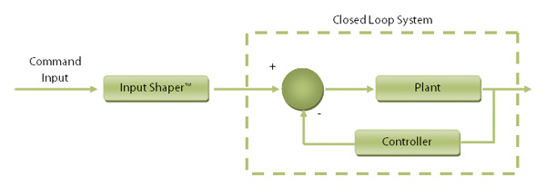

Optimized Trajectories for Motion Control
Input Shaping
Input Shaping® offers several clear advantages over conventional approaches for trajectory generation.
- Designing an Input Shaper™ does not require an analytical model of the system, it can be generated from simple, empirical measurements of the actual physical system.
- Input Shaping® does not effect the stability of the closed loop system in any way. It simply modifies the command signal to the system so that all moves, regardless of length, are vibration free.
- Input Shaping® does not require a dedicated transducer to measure the vibrations. It can be applied successfully to systems where vibrations cannot be observed at the feedback transducers.
- Input Shaping® is designed to accommodate changes in the vibration frequency. The vibration frequency can change by +/- 15% or more, but the vibrations will still be reduced by at least 95%. Furthermore, Input Shaping® can compensate for changes in the vibration frequency without affecting the stability of the closed loop system, as shown in the image above.
Input Shaping® can be used on open loop systems, outside the loop of closed loop systems (as shown in the figure above), or inside the loop of closed loop systems. However, when Input Shaping® is used inside of a closed loop controller, stability issues must be considered. Contact Convolve, Inc. to consider which configuration is best for your application.
Watch the ‘Introduction to Input Shaping’ Video
Copyright Convolve, Inc. 2005 — 2007, All Rights Reserved.